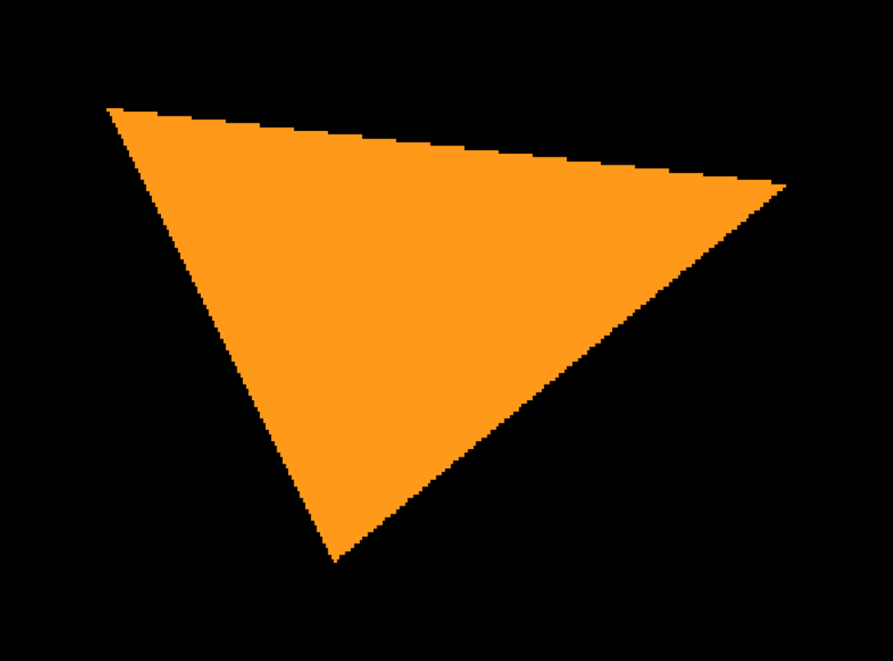

Simple Rasterization in LOVE¶
The goal of this tutorial is to draw a simple triangle using rasterization in LÖVE2D. We'll build everything from scratch to understand how pixels are actually drawn on screen.

Part 1: Creating the Software Buffer¶
Before we can draw anything, we need a place to store pixel data. In LÖVE2D, we'll create a software framebuffer using ImageData:
local W, H = 320, 180
local imgData, img
function love.load()
imgData = love.image.newImageData(W, H)
img = love.graphics.newImage(imgData)
img:setFilter("nearest", "nearest")
-- Clear to black
imgData:mapPixel(function() return 0, 0, 0, 1 end)
end
What's happening here?¶
imgData: This is the buffer—think of it as a box that stores the color of every pixel (320×180 = 57,600 pixels)img: This is the representation of that buffer that LÖVE can display on screensetFilter("nearest", "nearest"): Prevents blurring when scaling upmapPixel: Sets all pixels to black (RGB: 0,0,0, Alpha: 1)
The buffer is where we'll manually write pixels. Once we're done, we'll tell LÖVE to update the image with img:replacePixels(imgData).
Part 2: Defining the Triangle¶
Let's define a triangle with 3 vertices:
local p1 = { 40, 30 } -- Top-left
local p2 = { 280, 50 } -- Top-right
local p3 = { 120, 150 } -- Bottom
The Challenge: Drawing All Pixels Inside¶
How do we know which pixels are inside the triangle? We can't just draw the edges—we need to fill the entire interior.
The answer: Vector mathematics and CCW (Counter-Clockwise) winding order.
Mathematical Foundation¶
Key insight: A point \(P\) is inside a convex polygon if and only if it lies on the same side of all edges.
For a triangle with vertices ordered counter-clockwise \((v_1, v_2, v_3)\):
- Point \(P\) is inside if it's to the right of edge \(v_1 \to v_2\)
- And to the right of edge \(v_2 \to v_3\)
- And to the right of edge \(v_3 \to v_1\)
But how do we determine "left" vs "right"? We use the 2D cross product (also called the edge function).
The Edge Function¶
For an edge from \((x_0, y_0)\) to \((x_1, y_1)\) and a test point \((x, y)\):
This formula computes the signed area of the parallelogram formed by vectors \((P - P_0)\) and \((P_1 - P_0)\).
Interpretation:
- \(E(x, y) > 0\) → Point is to the left of the edge
- \(E(x, y) < 0\) → Point is to the right of the edge
- \(E(x, y) = 0\) → Point is on the edge
Interesting property: \(E(x, y)\) equals twice the area of triangle \((P_0, P_1, P)\)!
Part 3: The Edge Function Implementation¶
This simple function is the heart of rasterization. It tells us:
- Whether a point is inside the triangle
- The barycentric coordinates for interpolation (more on this later)
- The signed area of sub-triangles
Part 4: The Clamp Helper Function¶
Before we rasterize, we need a helper to keep coordinates within bounds:
local function clamp(x, a, b)
if x < a then return a
elseif x > b then return b
else return x
end
end
Why? We don't want to test every pixel on the screen—only those in the triangle's bounding box.
Part 5: Triangle Rasterization Function¶
Now let's build the complete rasterization function step by step:
local function fill_triangle2D(imgData, W, H, p1, p2, p3, color)
local x1, y1 = p1[1], p1[2]
local x2, y2 = p2[1], p2[2]
local x3, y3 = p3[1], p3[2]
local r, g, b, a = color[1], color[2], color[3], color[4] or 1
Step 1: Calculate Triangle Area¶
-- Oriented area
local A = edge(x1, y1, x2, y2, x3, y3)
if A == 0 then return end -- Degenerate triangle (collapsed to a line)
local invA = 1.0 / A
Why store invA (inverse area)?
We'll multiply by invA many times in the inner loop. Multiplication is faster than division, so we pre-compute \(\frac{1}{A}\) once instead of dividing by \(A\) thousands of times.
Performance impact: In a 320×180 buffer, we might test ~10,000+ pixels. Avoiding division saves significant time!
Step 2: Compute Bounding Box¶
-- Bounding box
local minx = clamp(math.floor(math.min(x1, x2, x3)), 0, W-1)
local maxx = clamp(math.floor(math.max(x1, x2, x3)), 0, W-1)
local miny = clamp(math.floor(math.min(y1, y2, y3)), 0, H-1)
local maxy = clamp(math.floor(math.max(y1, y2, y3)), 0, H-1)
Instead of testing all 57,600 pixels in a 320×180 buffer, we only test pixels in the smallest rectangle that contains the triangle. This optimization can save ~98% of pixel tests!
Step 3: Test Each Pixel¶
-- Iterate over pixels (using pixel center)
for y = miny, maxy do
for x = minx, maxx do
local px, py = x + 0.5, y + 0.5
Why x + 0.5 and y + 0.5?
Pixels are actually squares, not points. Testing at the pixel center (0.5, 0.5) gives more accurate results and matches how GPUs sample.
Step 4: Compute Barycentric Coordinates¶
local w1 = edge(x2, y2, x3, y3, px, py) * invA
local w2 = edge(x3, y3, x1, y1, px, py) * invA
local w3 = 1.0 - w1 - w2
These are barycentric coordinates—they express point \(P\) as a weighted combination of the three vertices:
where \(w_1 + w_2 + w_3 = 1\).
Properties:
- \(w_1, w_2, w_3 \in [0, 1]\) → Point is inside the triangle
- Any weight \(< 0\) or \(> 1\) → Point is outside
Visual explanation:
Step 5: Inside Test and Drawing¶
The CCW Rule:
A point is inside the triangle if all three barycentric coordinates are non-negative:
- \(w_1 \geq 0\) → Point is to the right of edge \(v_2 \to v_3\)
- \(w_2 \geq 0\) → Point is to the right of edge \(v_3 \to v_1\)
- \(w_3 \geq 0\) → Point is to the right of edge \(v_1 \to v_2\)
Important: Our triangles must be defined in CCW (counter-clockwise) order for this test to work correctly. If vertices are in CW order, the test will fail and nothing will be drawn.
Part 6: Putting It All Together¶
function love.load()
love.window.setTitle("2D Triangle - Basic Rasterizer")
imgData = love.image.newImageData(W, H)
img = love.graphics.newImage(imgData)
img:setFilter("nearest", "nearest")
-- Clear to black
imgData:mapPixel(function() return 0, 0, 0, 1 end)
-- Define triangle (screen coordinates)
local p1 = { 40, 30 }
local p2 = { 280, 50 }
local p3 = { 120, 150 }
-- Rasterize!
fill_triangle2D(imgData, W, H, p1, p2, p3, {1, 0.6, 0.1, 1})
-- Update the image
img:replacePixels(imgData)
end
function love.draw()
local winW, winH = love.graphics.getDimensions()
love.graphics.draw(img, 0, 0, 0, winW/W, winH/H)
end
Execution Flow¶
- love.load(): Initialize buffer → Draw triangle → Update image
- love.draw(): Display the image scaled to window size
Summary¶
We've built a complete 2D triangle rasterizer using:
- Software framebuffer (
ImageData) to store pixels - Edge function to test if points are inside the triangle
- Barycentric coordinates for precise inside/outside testing
- Bounding box optimization to avoid testing every screen pixel
- Pixel center sampling for accuracy
This is the fundamental algorithm used in all 3D graphics! GPUs do the exact same thing, just with:
- Hardware acceleration (parallel processing)
- Depth testing (z-buffer)
- Texture mapping
- Perspective correction
Next, we'll extend this to 3D by adding projection and depth buffering!